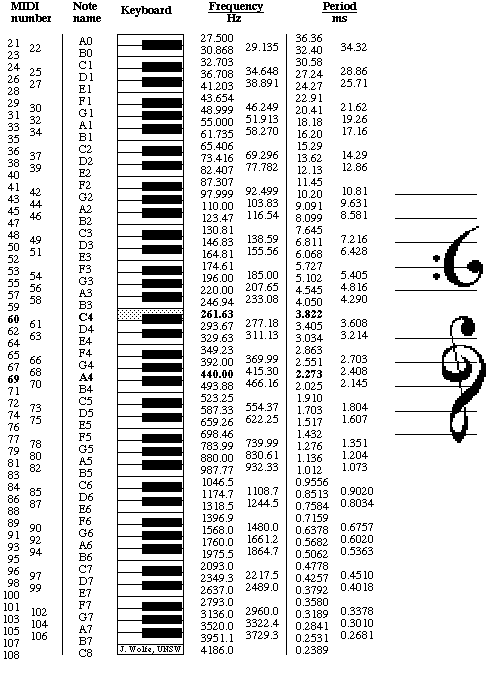

Note names, MIDI numbers and frequencies
Note names, MIDI numbers and frequencies are
related here in tables and via an application that converts them. The
musical interval between two notes depends on the ratio of their
frequencies. See Frequency and Pitch for more details and an introduction to frequency and pitch.
An octave is a ratio of 2:1 and, in equal
temperament, an octave comprises 12 equal semitones. Each semitone
therefore has a ratio of 21/12 (approximately 1.059). By
convention, A4 is often set at 440 Hz. These data were used to calculate
the first table below, which gives the frequency of any standard
keyboard note
or MIDI note number. To convert from any frequency
to pitch
(i.e. to the nearest note and how far it is out of
tune), go
to the frequency
to note converter.

This table is reproduced inverted below, i.e. with high pitch at the top.
To convert from any frequency to pitch
(i.e. to the nearest note and how far it is out of tune, go to the frequency
to note converter written by Andrew Botros.
How to do the caluation? Suppose thattwo notes have frequencies
f1 and f2, and a frequency ratio of f2/f1. An octave is a ratio of 2:1, so the number of octaves between f2 and f1 is
Now to divide the octave into smaller units. In equal
temperament, where all semitones have the same frequency ratio of 21/12,
conversion between note name and frequency is simple. First, one needs a
reference note and frequency. This is usually A4, which is often set at
440 Hz. For a note that lies n semitones higher (or −n semitones
lower), the frequency is then
Conversely, one can obtain n, the number of semitones from A4, from
Similar equations give no, the number of octaves from A4, and nc, the number of cents from A4:
In electronic music, pitch is often given by MIDI
number: let's call it m for our purposes. m for the note A4 is 69 and
increases by one for each equal tempered semitone, so this gives us a
simple conversion between frequencies and MIDI numbers (again using
440 Hz as the pitch of A4):
The notation used here is not universal: in German
speaking countries, H is used instead of B, and B is used for Bb. (This
allowed Bach to write his name in the Art of Fugue.) And of course when
different tuning systems are used, different names are applied.

|